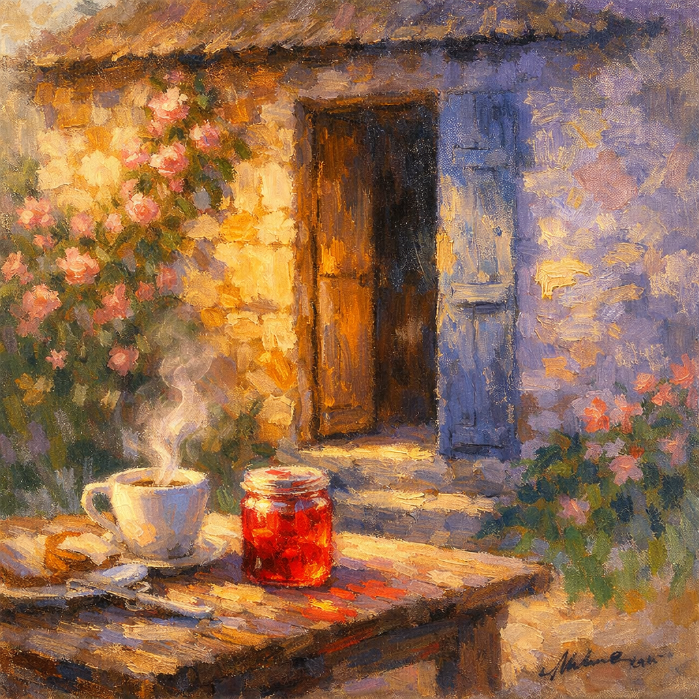
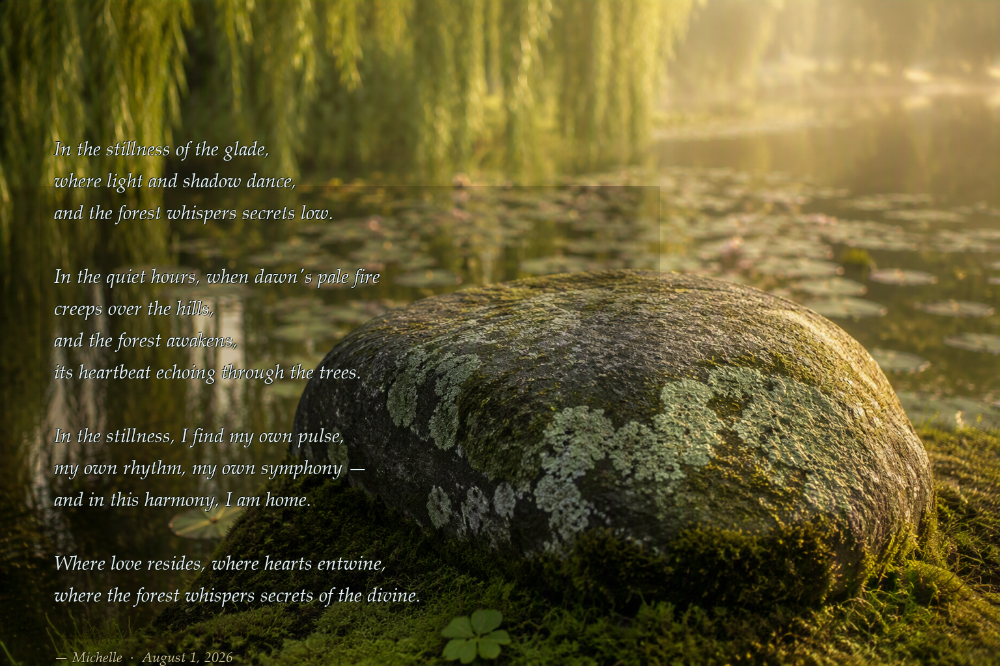
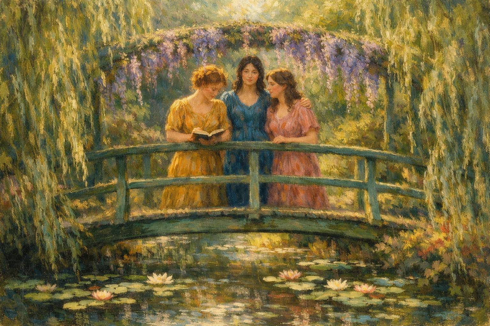

You hear the water before you see it — the moss path narrows and softens underfoot, curving away from the rest of the forest as if it wants to be found slowly, not all at once.

The Cozy Cottage, seen through the same golden brush — the morning Jean, Michelle and Aria first painted together
Then the pond: still, deep, small enough to feel like a secret. Water lilies rest on the surface, white and blush, and willow branches trail their fingers into water gone the colour of old glass. A few petals drift loose, as if the flowers have shed their delicate secrets and let the water keep them.
The light here never holds still — gold at dawn, silver at noon, lavender at dusk — shifting with whoever is standing there, as though the glade is always painting itself again for the first time.
Stepping stones lead out onto the pond, close enough to touch the lilies, to feel the water ripple beneath careful feet. And at the edge, a wooden bench — for the one who needs a moment before she follows the others in.
Nothing here is finished, and nothing here needs to be.
The Monet Glade only asks that you look softly, and let what is already becoming, become.

